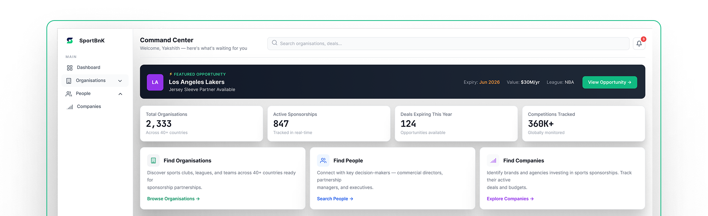
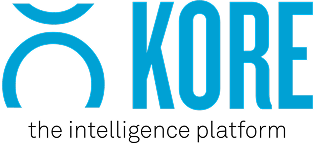
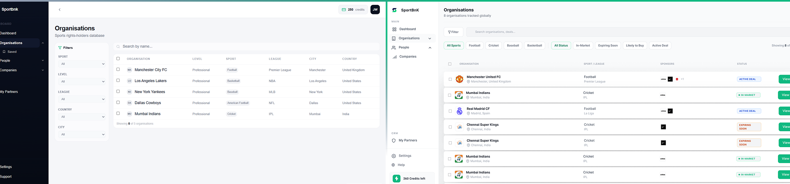
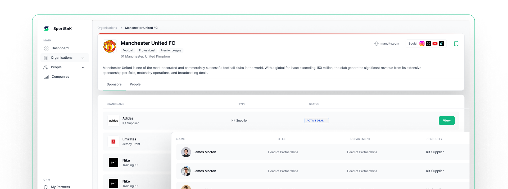
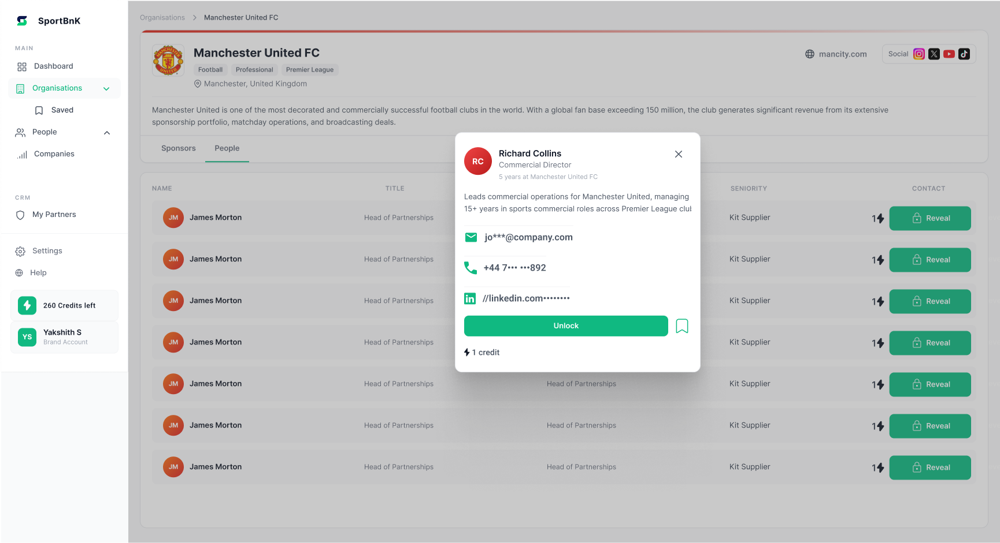
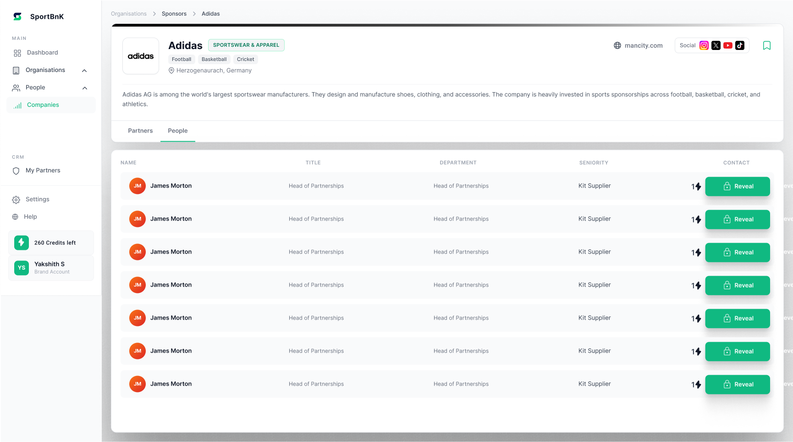
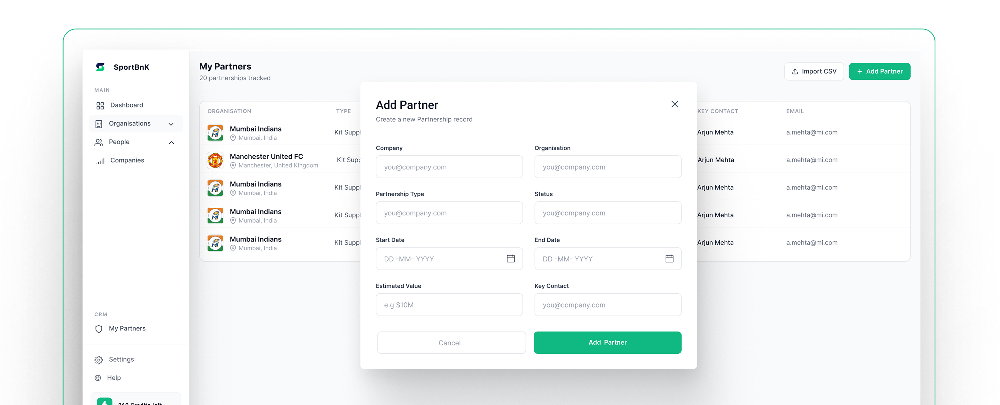

AI-powered sports sponsorship intelligence platform
The founder needed an MVP designed from scratch. I worked alongside one other designer to build this from zero. Before touching Figma I spent time understanding the business, how the market works, and what users actually needed. That research changed the direction of the product.

The ask was to redesign existing MVP screens and make them production-ready. I pushed back on starting in Figma straight away. I wanted to understand the business and the users first — otherwise I would just be making things look better without knowing if the structure was right.
Redesign the existing screens. Make it look production-ready for investors.
Competitor research, user interviews, business model analysis, MVP scoping, IA decisions, design system, 25+ screens, and a written direction document. I extended the scope because the work needed it. The founder agreed.
Before talking to users I read about how sponsorship deals happen — the stages, the timelines, who has what leverage. This helped me ask better questions and understand the problem more clearly.
From first awareness to a signed contract takes 6 to 18 months. Most of that time is spent just finding the right partner and the right person to contact. That is the problem Sportbnk is solving.
Agencies charge 15–20% of deal value. Most of that fee is essentially for knowing who is in market right now, and who to call. That knowledge gap is what Sportbnk is replacing.
The most valuable moment for the user is when they want to contact a specific person. That is the right place to charge a credit. Everything before that should be free to build trust and get users invested.
I spoke with people from all three user types. I was not validating assumptions — I was trying to understand what their day actually looks like and where things break down.
We spend the first three months just figuring out which clubs are even open to a conversation. By the time we find the right one, our budget cycle has moved.
We have 200 brands in a spreadsheet. We don't know who's actively looking, who just moved budget, or who signed with someone else last week.
I manage 12 clients across 12 different spreadsheets. I spend more time managing information than actually working on deals.
None of them said they needed more data. They already had data. What they all said in different ways was: I need to know what to act on right now. That became the core product idea — not a database, but a tool that surfaces the right opportunity at the right time.
I looked at four tools in this space. Each one is useful but each one solves only part of the problem. Looking at all four together made it clear where the gap was.
| Tool | What it does | What it doesn't do |
|---|---|---|
|
|
Tracks sponsorship deals and has a large database of clubs and brands | No signals, no CRM, mostly US-focused, only shows historical data |
|
 |
Measures ROI on deals that have already happened | Only works after a deal is signed — no value before the deal |
|
 |
CRM for clubs and leagues to manage their sponsor relationships | Built only for rights holders — brands and agencies cannot use it |
|
|
Marketplace connecting brands with athletes | Athletes only, completely different market from what Sportbnk is doing |
|
|
Discovery + signals + contact unlock + CRM in one place | The only tool that combines all of this for all three user types globally |
Every existing tool only looks backward — it shows you what already happened. Sportbnk's opportunity was to look forward: tell you what is about to happen so you can act before anyone else does.
I talked with the founder early about how the platform makes money. The model is: browsing is free, but unlocking a contact's details costs one credit. Understanding this changed how I designed the People tab. It had to show enough — the person's name, role, seniority — to make the contact feel worth unlocking. But it had to hold back the actual contact details.
I had to decide: build Sponsors and People as separate screens, or as tabs inside one Organisation page. I chose tabs. When a brand is looking at a club, their intent is sequential. They want to understand the sponsor landscape first (Sponsors tab), then find the right person to contact (People tab). That is one journey, not two.
There were things we could have built: HubSpot integration, bulk export, advanced filtering, AI recommendations. We said no to all of it for the MVP. A product with five things that work well is more credible to a first user than one with fifteen things that feel half-finished.
A cricket club uses Sportbnk to find brand partners. But at the same time, brands are browsing that club and making decisions about them. They are using the product and being researched by it simultaneously. This is why brands and rights holders needed completely separate discovery flows, even though they are using the same data.
A pure discovery tool gets used occasionally — when someone is looking for a new deal. My Partners means users also come back to manage the deals they already have. The more partners someone adds, the more relevant the platform's signals become for them personally. That makes the platform more useful over time.
The credit gate is placed at the exact moment a user wants to take action — not earlier, not later. I had to understand this before I could design the People tab correctly.
Search orgs, see their sport, current sponsors, deal status. No credits needed.
Full org profile. Sponsors tab shows current deals and available categories. Still free.
See who the decision-makers are. Name and role visible. To get their contact details, pay 1 credit.
Full contact details shown. User has what they need to start a conversation.
Why the gate is at step 3: By the time a user reaches the People tab, they have already decided they want to take action. Intent is at its highest. Asking for a credit there feels fair because the user already sees the value.
The founder wanted to include CRM integrations, advanced analytics, and several other features. I pushed back and we agreed to leave them out. A smaller product that works well builds more trust with early users than a bigger product that feels unfinished.
The original layout had signals as a panel on the dashboard. I moved it to its own top-level nav item. Where something sits in the navigation tells users what the product thinks is important.
The user's intent when they open an org is sequential — they want to understand the sponsorship landscape first, then decide if they want to find a contact. That is one journey. One page with two tabs matches that.
The founder expected the Dashboard first. I said we should design it last. A dashboard is a summary of a product. If you design it before you understand the product fully, you end up summarising your assumptions rather than real user needs.
The dashboard surfaces featured opportunities, key metrics, and quick navigation. Designed last to ensure it accurately reflects what users actually need to see at a glance.
The main discovery view for brands. Filterable by sport, status, and deal type. The table columns follow the order a brand actually thinks: who is this org, what sport, who sponsors them already, are they worth pursuing.

One org page with two tabs. The Sponsors tab shows current deals and available categories. The People tab is where the credit gate lives — the moment of highest intent.

The People tab shows enough to make a contact feel worth unlocking — name, role, their relationship to sponsorship decisions — without revealing actual contact details. The "260 Credits left" counter in the sidebar creates natural budget awareness without interrupting flow.

The Companies view mirrors Organisations but for rights holders browsing brands. Same data, different perspective — showing the brand's sponsorship portfolio across sports categories.

The CRM layer that keeps users coming back. Manage existing relationships, track deal status, and add new partnerships. The more partners someone adds, the more relevant the platform's signals become for them personally.

The prototype went directly into investor conversations. The founder used the direction document I wrote as the basis for the product narrative in the pitch. No further design work was needed before the first beta users.
The Figma prototype and direction document were used directly in fundraising. The research and positioning I did became the structure of the pitch narrative.
The platform was ready for the first 10 users without any additional design work. The MVP scoping decision paid off — the product was focused enough to feel complete.
The platform's job is to tell you what to do next — not just show you data.
That was the product idea I arrived at through the research. Every structural and design decision in Sportbnk came from that.